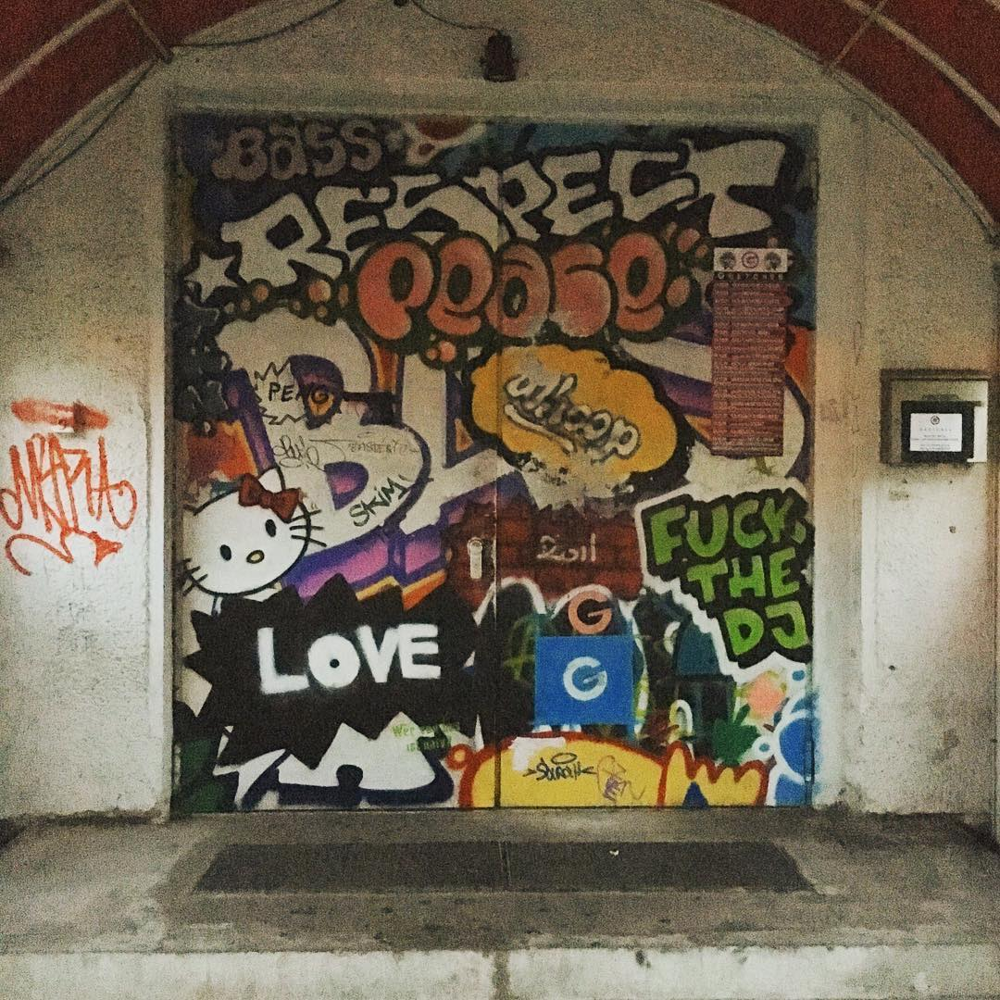
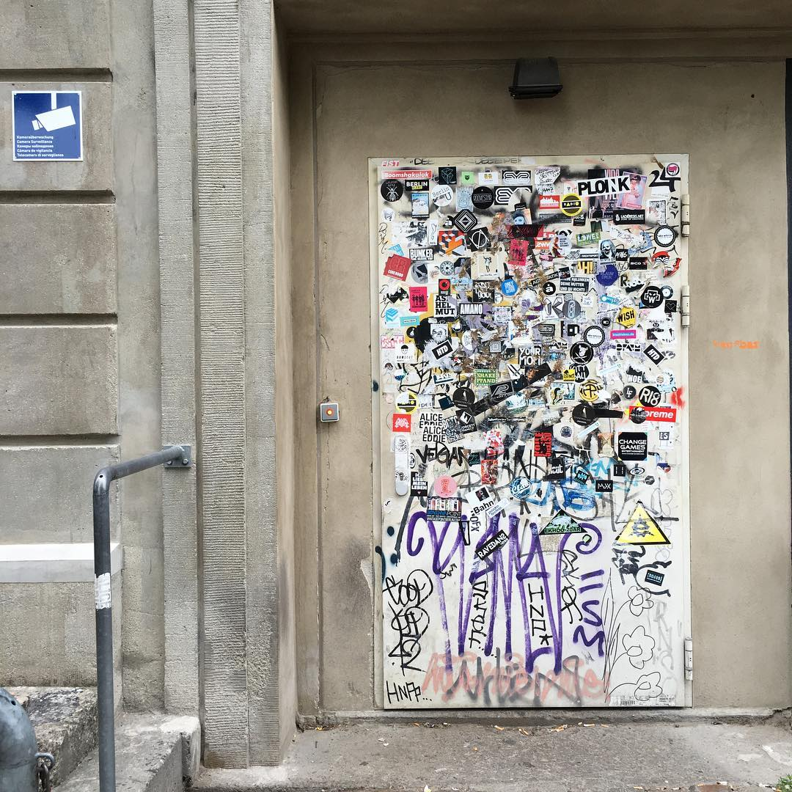
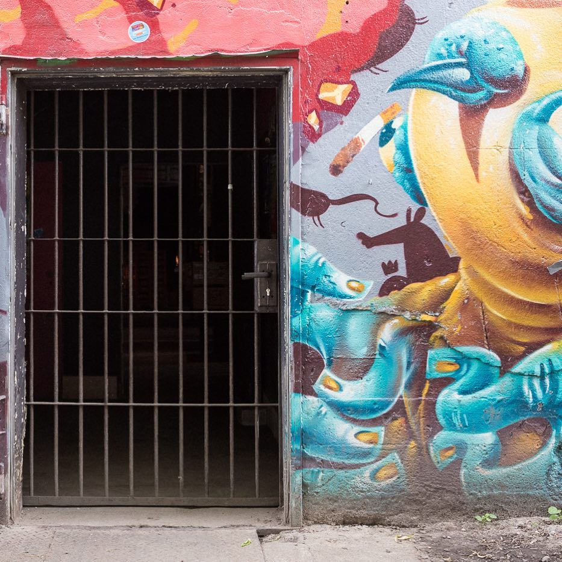
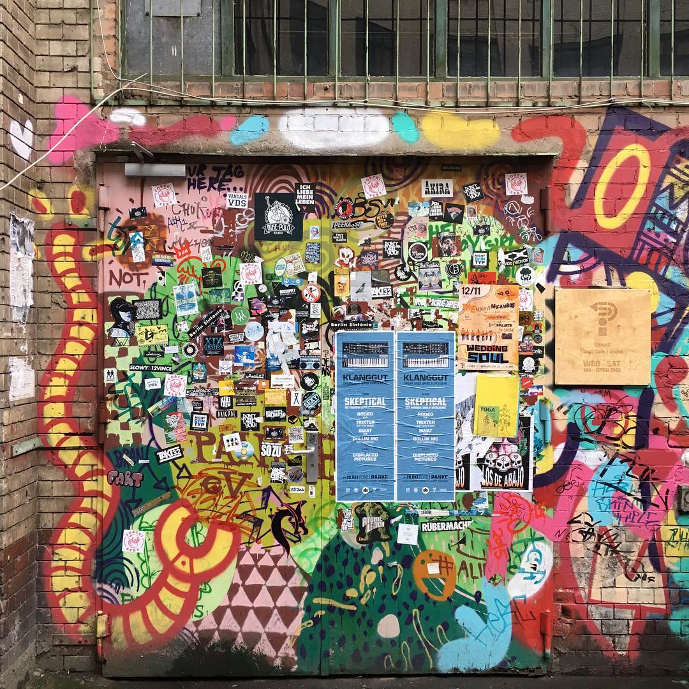

Gretchen
Obentrautstraße 19,
10963 Berlin
| Gallery |








My name is Ronan Byrne and I am an aspiring front end web developer from Ireland. For a while now I have been travelling to Berlin and in that time I have developed a great love for the city's club culture. One thing that has always struck me as unique are the entrances to these clubs, oftentimes bearing no discernible marks as to what a world lies in wait behind them. However, they can oftentimes be spotted due to a mass of graffitti and stickers or in some cases a mish-mash wood and other materials making a crude door.
I am currently attempting to learn a few of the many skills needed to begin a career as a front end web developer and I therefore created this page to practice a thing or two - namely the flexbox and hover properties.
If you would like to learn more about me and my attempts to learn front end web development you can do so through the social media links below. Hopefully in the near future I will have a link to a portfolio containing all the projects I have worked on. Thanks x